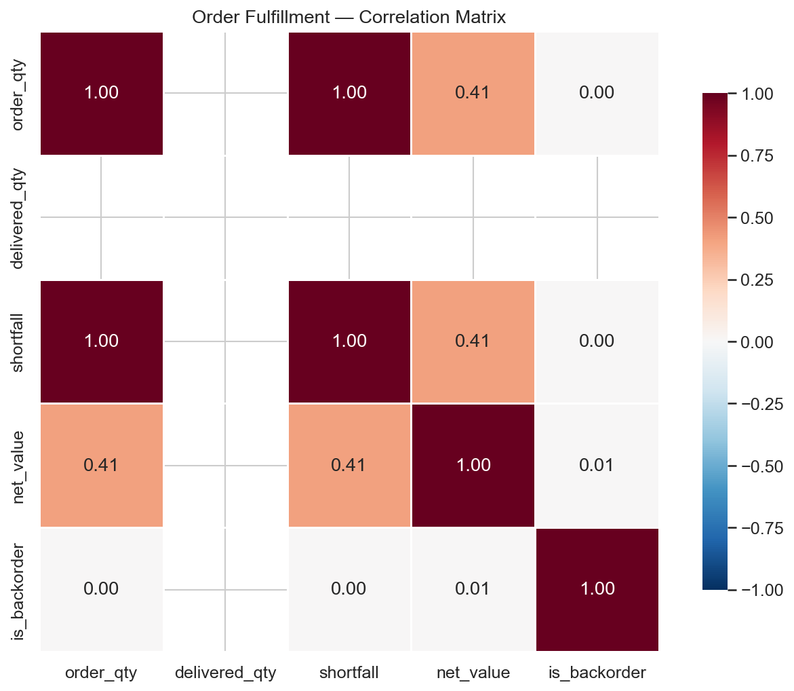
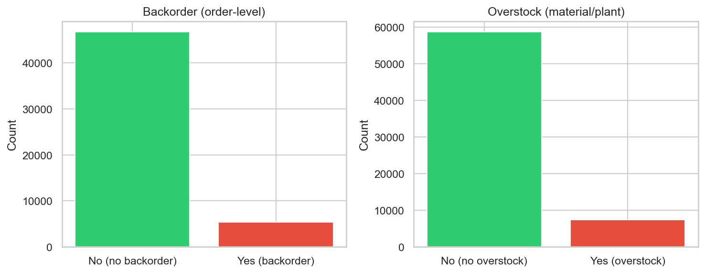

Progress Report Mar 5th (v2)
Data Capstone - SAP Backorder Prediction | Models, Visualizations, Progress
Data Capstone - SAP Backorder Prediction | Models, Visualizations, Progress
What: Four classifiers predict backorder risk. Data: 52K rows, 80/20 stratified split (train 41.7K, test 10.4K), ~10% positive. Decisions: No leaky features—use cumulative_order_quantity, total_quantity_delivered, net_value, material_type, item_category. LR: StandardScaler + class_weight=balanced. Trees: scale_pos_weight for imbalance. Interpret: F1 = precision/recall balance; ROC-AUC = ranking quality. XGBoost best (90.5% F1). Regularization (max_depth, min_samples_leaf, reg_alpha/lambda) applied to reduce overfitting.
Test-set metrics. Higher recall = fewer missed backorders; higher precision = fewer false alarms.
| Model | Accuracy | Precision | Recall | F1 | ROC-AUC |
|---|---|---|---|---|---|
| Logistic Regression | 32.1% | 11.3% | 81.4% | 19.8% | 0.78 |
| Random Forest | 93.4% | 61.8% | 94.7% | 74.8% | 0.991 |
| XGBoost | 97.9% | 85.8% | 95.7% | 90.5% | 0.998 |
| LightGBM | 96.5% | 77.0% | 94.8% | 85.0% | 0.996 |
We ran five validation strategies to assess generalization: 5-fold stratified CV, temporal split (train on older 80%, test on newer 20%), material holdout (train on 80% of materials, test on held-out materials), stronger regularization (max_depth=3, reg_alpha=1, reg_lambda=1, min_child_weight=10), and feature ablation (numeric-only).
| Strategy | F1 | ROC-AUC |
|---|---|---|
| 5-fold CV (mean ± std) | 90.8% ± 0.6% | 99.8% ± 0.02% |
| Temporal split | 65.3% | 98.0% |
| Material holdout | 85.1% | 99.6% |
| Stronger regularization | 89.8% | 99.7% |
| Feature ablation (numeric only) | 71.2% | 98.4% |
We ran diagnostics to check for leakage or a near-deterministic relationship. Feature–target correlations are weak (cumulative_order_quantity: 0.03, total_quantity_delivered: −0.004, net_value: 0.06)—no linear leakage. However, backorder requires outstanding quantity (order − delivered > 0), and outstanding_qty = max(0, cumulative_order_quantity − total_quantity_delivered).
| Diagnostic | Result |
|---|---|
| Simple rule: backorder if cum_order > total_delivered | Recall 100% (all backorders have shortfall), precision 31%, F1 47.8% |
| (cum_order − total_delivered) as ranking score | ROC-AUC 90.7% |
| Backorder when cum ≤ deliv | 0 — no backorder without shortfall |
Ridge/ElasticNet predict log(1 + backorder_units) from same features. Outputs feed replenishment decisions (how much to order).
N/As: ETL uses fillna(0) for numerics, fillna("") for strings. Modeling fills NaN and inf before fit. Rows with missing target dropped. Duplicates: Order table has 0 duplicates (unique on client + sales_doc + item). Material master and customers deduplicated. Inventory (36K) and purchase (817K) duplicates kept by design (multi-location / multi-item grain). ETL flow: build_master_tables normalizes keys, aggregates deliveries/billing, joins material/customer, deduplicates. build_brd_metrics drops rows missing required fields. build_targets uses fillna for safe numeric handling. Raw→clean step is separate or pre-existing.
What: Figures from EDA and modeling. Interpret: Confusion matrices show true/false positives and negatives; feature importance shows which predictors matter; correlations show multicollinearity.
Rows = actual, columns = predicted. Diagonal = correct. Top-left: true negatives; bottom-right: true positives. Lower off-diagonal = better.

Bar height = how much each feature reduces impurity. Top predictors: cumulative_order_quantity, total_quantity_delivered, net_value.

Heatmap: |r| near 1 = strong linear relationship. High correlations between features may suggest redundancy.

What: Four 2-week sprints. Flow: ETL → EDA → classification (LR + trees) → regression (Ridge/ElasticNet) → integration. Sprint 4 includes leaky-feature fix.
| Sprint | Dates | Status |
|---|---|---|
| Sprint 1 | Jan 20 – Feb 2 | Complete: ETL, master tables |
| Sprint 2 | Feb 3 – Feb 16 | Complete: EDA, visualizations |
| Sprint 3 | Feb 17 – Mar 2 | Complete: LR, RF, XGBoost, LightGBM, class imbalance |
| Sprint 4 | Mar 3 – Mar 16 | In progress: Ridge/ElasticNet regression, leaky feature fix |
Interpret: (1) Class balance—imbalance drives class_weight/scale_pos_weight. (2) Feature importance—non-leaky features that matter. (3) Model comparison—XGBoost leads; LR baseline.
~10% of order lines have backorder risk. We use class_weight and scale_pos_weight to handle this imbalance.

Cumulative order quantity, total quantity delivered, and net value drive backorder predictions (no leaky features).
XGBoost leads (90.5% F1). LightGBM 85%, RF 74.8% (regularized). Logistic regression weak without direct signals.
Data → features → classification (risk yes/no) and regression (magnitude) → replenishment action.
Gantt: done = complete; active = in progress. Sprints 1–3 done; Sprint 4 active.
Cleaning current work: Document raw→clean pipeline; add outlier handling (winsorization) if needed; formalize inventory/purchase grain for modeling.
Next steps: Finish Sprint 4 (demand forecasting, gradient boosting regressor). Sprint 5: integrate classification + regression into a single prediction flow; final report and presentation.